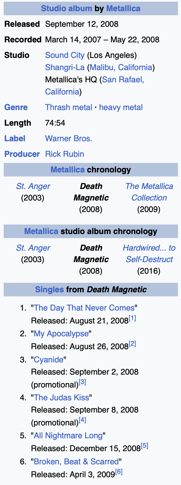

Q1: How many singles were released in the same year Death Magnetic was released?
A1: 2
Q2: How many months did it take for Metallica to record Death Magnetic?
A2: 14 Months
Q3: How many years after Death Magnetic did Metallica record another studio album?
A3: 8 years
Q4: How many singles were released on the Death Magnetic album in 2008-2009?
A4: 3